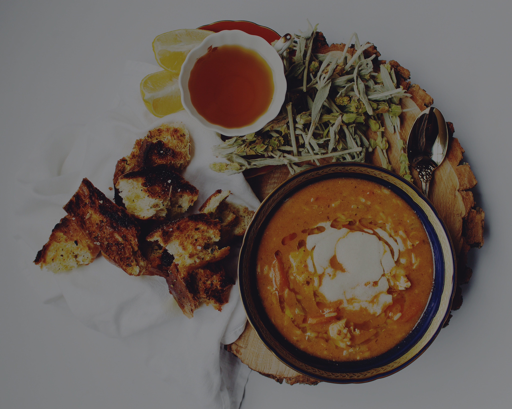

French Onion Soup
We have been trying French onion soup in restaurants for years and my family and friends agree
none can compare to my recipe for taste and simplicity of preparation.
Ingredients
- 1/2 cup unsalted butter
- 2 tablespoons olive oil
- 4 cups sliced onions
- 4 (10.5 ounce) cans beef broth
- 2 tablespoons dry sherry (optional)
- 1 teaspoon dried thyme
- salt and pepper to taste
- 4 slices French bread
- 4 slices provolone cheese
- 2 slices Swiss cheese,diced
- 1/4 cup grated Parmesan cheese